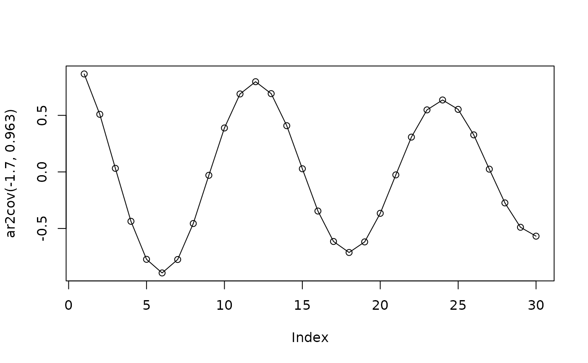

Computes the auto-covariance for given coefficients.
Usage
ar2cov(a1, a2, k = 30, useC = FALSE)
Arguments
- a1
the first auto-regression coefficient.
- a2
the second auto-regression coefficient.
- k
maximum lag for evaluating the auto-correlation.
- useC
just a test (to use C code).
Value
the autocorrelation as a vector or matrix, whenever a1 or a2 are
scalar or vector.
Details
Let the second order auto-regression model defined as
x_t + a_1 x_{t-1} + a_2 x_{t-2} = w_t
where w_t ~ N(0, 1).
Examples
ar2cov(c(-1.7, -1.8), 0.963, k = 5)
#> [,1] [,2] [,3] [,4] [,5]
#> [1,] 0.8660214 0.5092364 0.03172323 -0.43646514 -0.7725402
#> [2,] 0.9169638 0.6875349 0.35452664 -0.02394815 -0.3845158
plot(ar2cov(-1.7, 0.963), type = "o")
